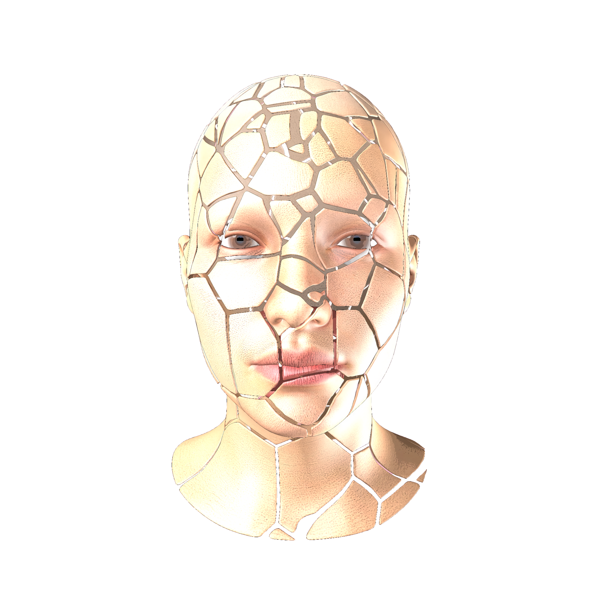

When people stay at a cafe or restaurant for minimum 1 hour,
people leave 10 strings of hair, 50 fingerprints, 4 eyebrows, bits of nail,
chewed gum and salva in average. These are all your DNA footprint.
In this world where anyone can synthesize and manufacture anything, protect your privacy
by disguising!
With our company's 3D hologram machine, you can fix and wear your desired face
whenever, wherever.
These are just enough to reconstruct your face exactly up to 90%.
People will never know it's you once you disguise with our revolutionary device!

Scan your real face, tweak some attributes on the app,
then this necklace-like device will magically edit your face!
Leave no trace behind you. Obtain freedom to be in public without
any fear of losing privacy!
Once notorious technology, the Deep Fake has now become
one of the most essential technologies in modern life.
It's not the technology, but the politics and society surrounding it.
Surveilance and invasion of corporate and government has far crossed the line.
Our company, Love And Faith will keep you safe.
Connected wireless to any smart device, start our application,
and you will be provided with 1000+ presets of favorable, curated faces up to date!
Pick your mood, pick your makeup, even change your gender and age!
Contact us for buying.
You can get full pack with permanent use,
or make subscription monthly, annually.